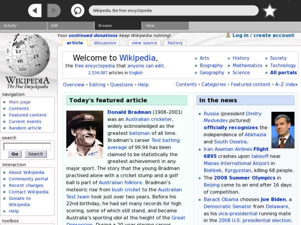
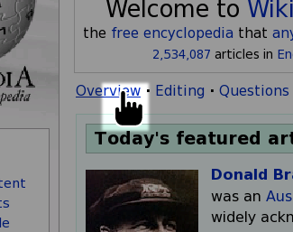
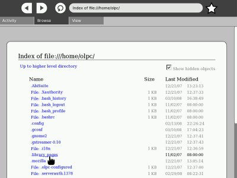

Browsing the Web
To visit web pages you need to first open the Browse Activity.
At the top of the Browse Activity you see this:
This is the Location Bar and it is here you type the location of the web page you wish to view. The location of a web page is also known as the URL or Uniform Resource Locator. Every page on the web has a unique URL. You need to know the URL before you can visit a specific web page. For example if I wanted to visit the Wikipedia web page I would need to know that its URL is:
http://www.wikipedia.org
If I am connected to the internet and I enter this URL into the Location Bar and press Enter then I would see this:

You can then move your cursor over the page and try clicking different parts. If you click on a part of the page that takes you to another webpage that means you found a hyperlink (or just "link" for short). Links connect web pages together so you don't have to keep typing the URL of associated web pages in the Location Bar.
Before you spend hours clicking every part of the page searching for links, it might be quicker to know how links can be identified. While it is true that any part of a web page can be a link, most of the time they are easily identified. Many text links are underlined or colored differently from the rest of the text on the page. In the Wikipedia example above, if I click the large "English" text at the top I find I am taken to another web page. In this case I am taken to the English version of Wikipedia which looks like this:

I can then keep clicking links and going from web page to web page, this is typically called "browsing the web".
While sometimes you can tell if text is a link it is also true that some images are links. There is one easy trick for telling if part of a web page is a link and that is to simply move the pointer over that part of the page. If the text or image is a link the pointer changes from an arrow to a hand:

If you flip the XO into handheld or flat mode, you can use the gamepad keys to scroll the pages and
click links.
Browsing your computer
If you want to browse the directory structure on your computer using the Browse Activity, click the Browse tab and type file:///home/olpc/ as the URL. You can see a listing of the files and folders on your computer.

Author : BrowsingWeb
© adam hyde 2008
Modifications:
Anne Gentle 2008
Tom Boyle 2008
License : General Public License
Produced in FLOSS Manuals (http://www.flossmanuals.net)